Histoire et éducation à la citoyenneté
04 / 12 réalité sociales
La romanisation
-509 à 476 · L'expansion de l'Empire romain
- citoyen
- culture
- droit
- empire
- État
- infrastructure
- institution
- peuple
- territoire

Mise en contexte
La romanisation est un concept historique qui désigne un processus d'acculturation par l'adoption de la langue latine et de la culture romaine dans l'aire d'influence de l'Empire romain.
Tu pourras ainsi découvrir comment Rome a exercé sa domination sur un territoire immense et sur de nombreux peuples sur lesquels elle a imposé ses institutions et sa culture. L'étude de l'organisation politique de l'Empire romain, à son apogée au 2e siècle, permet de comprendre son influence sur les sociétés conquises par son armée et éclaire les fondements de l'État moderne.
En seulement quelques siècles, Rome contrôle tout le pourtour de la mer Méditerranée et cette conquête s'est faite par la négociation ou par l'usage de la force. Auguste, qui devient empereur en -27, permet à la cité de retrouver la paix (Pax romana) après une période de troubles politiques et de guerres internes.
La fondation de Rome
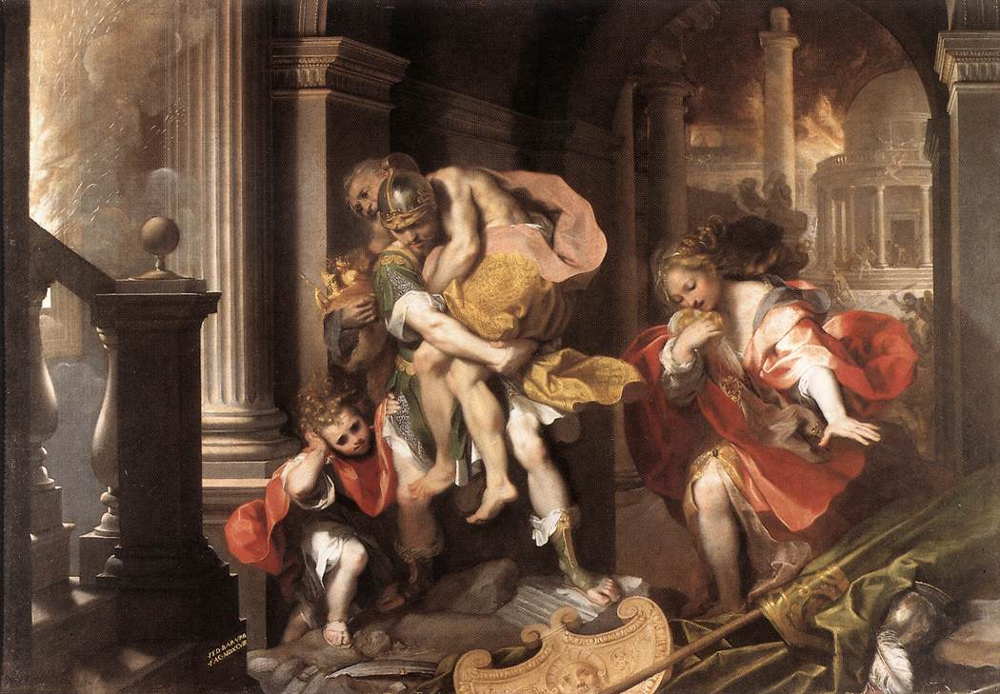
Source
Federico Barocci, Aeneas' Flight from Troy by Federico Barocci, Wikimedia Commons. Licence : Domaine public.Une légende épique
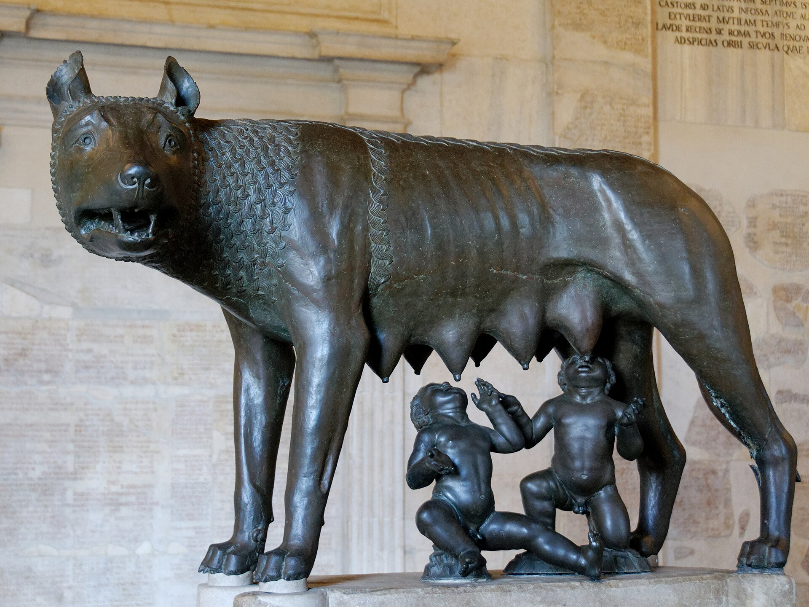
Source
Unknown artist Unknown artist, Capitoline she-wolf Musei Capitolini MC1181, Wikimedia Commons. Licence : Domaine public.La fondation légendaire de Rome a été racontée et embellie par Virgile dans L'Énéide. D'après le poète, le héros Énée, fils du roi Anchise et de la déesse Vénus, s'est réfugié sur les bords du Tibre après la chute de Troie. Son fils Ascagne a fondé la ville d'Albe la Longue.
Numitor, descendant d'Ascagne et roi d'Albe, eut une fille. Choisissant de devenir servante de Vesta, déesse du foyer et du feu domestique, elle fit voeu de chasteté. Néanmoins, elle donna le jour à des jumeaux, Rémus et Romulus, qu'elle dit avoir été conçus par le dieu de la guerre Mars en personne.
Un oracle ayant prédit au frère et rival de Numitor que les jumeaux ne lui amèneraient que des malheurs, celui-ci ordonna de les tuer. Mais l'homme chargé du meurtre se contenta de les abandonner en un lieu désert. Ils furent recueillis par une louve et restèrent en vie grâce à ses bons soins avant d'être adoptés par l'intendant des troupeaux du roi.
Devenus adultes, les deux frères chassèrent le roi Amulius, ayant lui-même renversé Numitor. Puis, ils décident de fonder une ville à l'endroit où ils ont été sauvés par la louve, à 25 kilomètres au nord-ouest d'Albe.
Pour savoir lequel régnerait sur la ville, ils demandent un signe aux dieux : Rémus, du haut de l'Aventin, vit six vautours, mais Romulus, du haut du Palatin, en vit douze. C'est donc à ce dernier que reviendra la royauté.
Romulus traça à la charrue le périmètre de la future cité, réputé sacré et inviolable, mais son frère jumeau, par bravade, sauta par-dessus le sillon. Inflexible, Romulus le tua.
Ainsi, c'est sous le signe des dieux et de la violence que naquit la Ville éternelle, empruntant son nom à son fondateur.
Situer dans le temps et dans l'espace
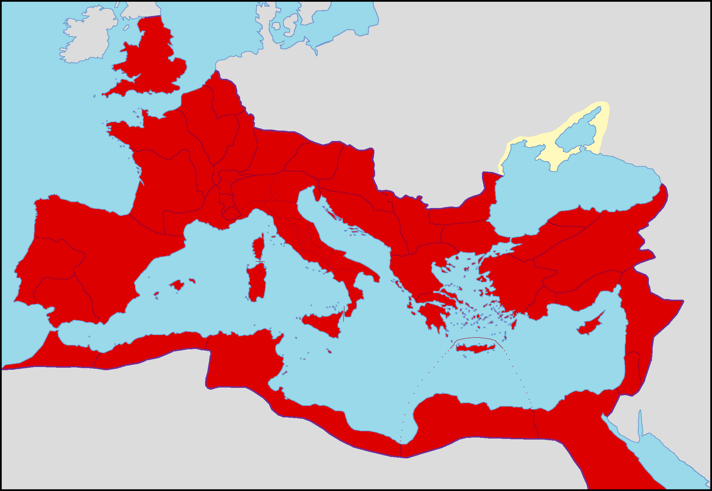
Source
Coldeel ( talk ) 23:06, 26 March 2009 (UTC), Roman Empire in 96 AD, Wikimedia Commons. Licence : Domaine public.L'histoire romaine se découpe en trois grandes périodes : la royauté, la République et l'Empire. La ligne du temps suivante les replace à l'échelle, de la fondation légendaire de Rome à la chute de l'Empire romain d'Occident.
À son apogée, au 2e siècle, l'Empire romain encercle complètement la mer Méditerranée, que les Romains appellent Mare Nostrum, « notre mer ». La carte suivante montre son étendue en 96, à la veille de cette apogée.
La royauté romaine (-753 à -509)
Liste des 7 rois de Rome
- -753 à -715 : Romulus
- -715 à -673 : Numa Pompilius
- -673 à -641 : Tullus Hostilius
- -641 à -616 : Ancus Marcius
- -616 à -575 : Tarquin l'Ancien
- -575 à -535 : Servius Tullius
- -535 à -509 : Tarquin le Superbe
La République romaine (-509 à -27)
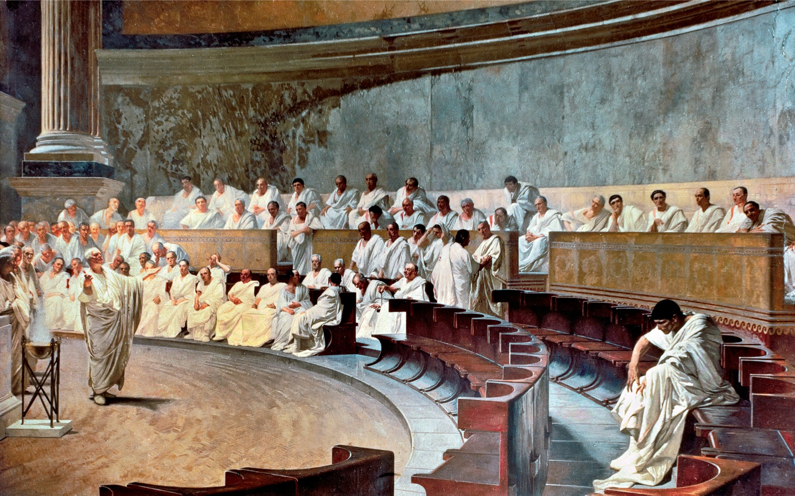
Source
Cesare Maccari, Cicero Denounces Catiline in the Roman Senate by Cesare Maccari - 4, Wikimedia Commons. Licence : Domaine public.« Le mot "république" vient du latin res publica, ce qui signifie "la chose publique", contrairement à res privata, "la chose privée". Gouverner la cité est donc une affaire publique et collective. La devise de la République est Senatus Populusque Romanus (SPQR), "le Sénat et le peuple romain". Elle symbolise l'union du Sénat, où siègent à l'origine les familles patriciennes, et de l'ensemble des citoyens romains. » (Source : Wikipédia)
L'Empire romain (-27 à 476)

Source
Till Niermann, Statue-Augustus, Wikimedia Commons. Licence : Domaine public.L'Empire fut fondé par Auguste, qui mit fin à la dernière guerre civile de la République romaine. Il s'agit d'un système politique où l'empereur s'appuie sur une bureaucratie sans cesse plus développée, sur une administration territoriale importante et sur une puissante armée. À partir de -27 commence une période de paix appelée « Pax romana ». Cela désigne la longue période de paix imposée par l'Empire romain aux régions conquises. Elle a permis à l'empire de connaître une période de prospérité jusqu'au 2e siècle de notre ère.
L'évolution territoriale
La société romaine
Dans cette section portant sur la société romaine, tu auras l'occasion d'en apprendre plus sur la hiérarchie sociale romaine, sur les habitations des Romains, sur les thermes et les bains publics, sur les métiers des plébéiens et des pérégrins ainsi que sur les activités auxquelles ils participaient afin de se divertir.
La hiérarchie sociale romaine
La société romaine est très inégalitaire : la place de chacun dépend de sa naissance, de sa fortune et de son statut juridique. Le schéma suivant présente les grands groupes sociaux, du plus puissant au plus démuni.
Explore les classes sociales
Chaque groupe de la société romaine vit selon des règles qui lui sont propres. Parcours les onglets de l'interface suivante pour découvrir la citoyenneté, les patriciens, les plébéiens, les gens libres, les femmes, les enfants et les esclaves, puis vérifie ce que tu retiens avec le quiz.
Les classes sociales romaines
Parcours chaque groupe, puis teste-toi avec le quiz
Les patriciens et les plébéiens sont les seuls à avoir le statut de citoyen romain. La citoyenneté romaine procure des avantages importants durant la période de l'Empire.
- Participer à la vie politique
- Utiliser la cour de justice
- Posséder des terres
- Épouser une fille de citoyen
- Participer aux recensements
- Payer des impôts
- Faire son service militaire
Les patriciens forment le sommet de la hiérarchie sociale romaine.
Les patriciens constituent la classe supérieure de la société romaine. Ce statut se transmet principalement par la naissance.
Ils sont principalement de riches propriétaires terriens et des nobles.
Ils ont beaucoup de pouvoir dans la société romaine et certains jouissent même d'une certaine influence sur l'empereur.
Les plébéiens forment le peuple, la majorité de la population romaine.
Les plébéiens constituent la majorité de la population romaine. Ils sont artisans, commerçants et paysans.
Ils sont très nombreux et partagent les mêmes droits que les patriciens en lien avec la citoyenneté.
Les plébéiens n'ont par contre pas la même influence dans la société ni la même quantité de richesse.
Mêmes droits de citoyenneté, mais pas le même pouvoir ni la même richesse.
Les gens libres sont tous les habitants qui ne sont pas des esclaves. Il est donc possible d'être une personne libre sans être un citoyen. Seuls les patriciens et les plébéiens sont à la fois citoyens et libres.
Les pérégrins, des étrangers libres
Les pérégrins habitent une province conquise par l'armée romaine. Certains sont venus s'installer à Rome pour profiter des avantages de la capitale.
Ils sont libres mais pas citoyens. D'ailleurs, le mot « pérégrin » signifie « étranger ».
Ils doivent payer des impôts et n'ont aucun droit politique.
Les affranchis, d'anciens esclaves libérés
Les affranchis sont d'anciens esclaves à qui leur maître a rendu la liberté.
Ils deviennent un « client » de leur ancien maître, à qui ils doivent encore le respect et certains services.
Ils ont des droits similaires à ceux de leur ancien maître, mais ne peuvent pas être élus.
L'enfant de l'affranchi obtient la liberté complète et peut devenir citoyen.
Pérégrins et affranchis sont libres mais pas citoyens. Seuls les enfants des affranchis peuvent accéder à la citoyenneté romaine complète.
Les femmes appartiennent à la classe sociale de leur mari. Elles ont certaines libertés, mais n'ont pas les mêmes droits que les hommes. Elles sont considérées comme des mineures tout au long de leur vie.
La tutelle tout au long de la vie
- L'enfance et la jeunesse
La jeune fille reste sous la tutelle de son père. Elle reçoit une éducation orientée vers le mariage et la gestion du foyer.
- Le mariage
La femme passe de la tutelle de son père à celle de son mari. Son statut social dépend entièrement de celui de son époux.
- Épouse et mère
Son rôle principal est de gérer le foyer et d'élever les enfants. Elle peut posséder des biens, mais toujours sous supervision.
- Le veuvage
Veuve, la femme peut jouir d'une certaine indépendance relative, mais reste soumise à la tutelle d'un proche parent ou du magistrat.
- Gérer le foyer
- Posséder des biens
- Participer à la vie sociale
- Hériter
- Pas de droits politiques
- Pas de service militaire
- Contrôle de leur mariage
- Obéissance obligatoire
Le statut social de la femme dépend de celui de son mari. Une femme de patricien a plus de libertés et de respect qu'une femme de plébéien. Les femmes ne sont jamais citoyennes à part entière, même si elles sont nées de citoyens.
La vie de l'enfant romain est divisée en étapes bien définies, chacune marquant une transition importante. L'éducation suit un parcours structuré selon la classe sociale et le sexe de l'enfant, préparant les jeunes à leurs futures responsabilités dans la société romaine.
Les âges de la vie romaine
- Petite enfance0 à 7 ans
L'enfant reste dans le giron maternel. Les jeunes enfants des familles riches sont souvent confiés à une nourrice. À partir de 5-6 ans, un esclave lettré commence à enseigner les rudiments de la lecture et de l'écriture.
- Enfance7 à 14-17 ans
À 7 ans, l'enfant quitte le giron maternel pour amorcer son éducation formelle. Garçons et filles reçoivent une première instruction dans une école (ludus) sur le Forum, dispensée par un magister ludi (maître d'école). Les enfants y apprennent les bases du calcul, de la lecture et de l'écriture.
- Jeunesse (adulescentia)14-17 à 28-30 ans
La jeunesse s'étend de l'adolescence jusqu'à l'entrée dans l'âge adulte. C'est une période de formation intensive et de préparation aux responsabilités civiques et sociales.
Les parcours éducatifs selon le sexe
Les garçons reçoivent la même formation de base que les filles : lecture, écriture et calcul.
Les jeunes garçons issus des familles aisées poursuivent leurs études avec un grammairien (grammaticus), qui les initie au grec et à l'étude des lettres classiques.
L'éducation supérieure est essentiellement oratoire. Un rhéteur enseigne l'art du discours, préparant le jeune citoyen à son rôle futur sur la scène politique : démonstration, prestation oratoire, débit, ton et même la posture du corps et le positionnement des mains.
Les filles reçoivent une instruction formelle identique à celle des garçons : lecture, écriture et calcul, généralement à l'école ou avec des précepteurs.
Les jeunes Romaines dépassaient rarement cette première instruction. Après 11 ans, leur éducation se concentre sur l'apprentissage pratique de la gestion du foyer, de la broderie, du chant et de la musique.
Les filles sont formées pour devenir des épouses et des mères. Sous la République, elles sont souvent fiancées vers 6-7 ans et mariées vers 13 ans dans des mariages politiques arrangés. Sous l'Empire, ces pratiques évoluent graduellement.
L'éducation romaine était hautement stratifiée par sexe. Tandis que les garçons des familles riches pouvaient accéder à une formation complète les préparant au pouvoir politique, les filles étaient préparées au rôle d'épouses et de mères. L'éducation des esclaves était pratiquement inexistante, à moins qu'ils ne possèdent des talents particuliers exploités par leurs maîtres.
Les esclaves sont les seuls habitants de l'Empire qui n'ont aucun droit. Ils sont considérés comme des propriétés de leur maître jusqu'à la fin de leur vie.
D'où viennent les esclaves?
Le plus souvent, les esclaves sont d'anciens soldats capturés lors d'une défaite face à l'armée romaine. Ils peuvent aussi être nés esclaves (enfants d'esclaves) ou vendus par leurs parents.
Les tâches des esclaves
- Travaux domestiques
- Travaux agricoles
- Entretien de maisons
- Gladiateurs
- Métiers divers
- Services personnels
Les esclaves n'ont absolument aucun droit en tant que personnes. Ils ne peuvent pas participer à la vie politique, posséder des biens ou se marier légalement.
Les esclaves sont une propriété de leur maître. Ils peuvent être vendus, loués ou donnés comme n'importe quel autre bien matériel.
Certains esclaves auront la chance d'être affranchis par leur maître. C'est le seul moyen pour un esclave de retrouver la liberté. Une fois affranchi, l'ancien esclave devient un homme libre et peut même, à travers ses enfants, accéder à la citoyenneté romaine.
Exemple historique : Lucius Caecilius Iucundus
Lucius Caecilius Iucundus (vers 9 de notre ère, Pompéi) était un riche banquier (argentarius) et commissaire-priseur (coactor) romain de la ville de Pompéi. Son nom même, « Iucundus », suggère qu'il pourrait avoir des origines serviles. Il est célèbre pour avoir laissé derrière lui des archives documentaires exceptionnelles qui offrent un aperçu unique de la vie économique romaine du 1er siècle. Ces tablettes de cire et dossiers commerciaux, préservés par l'éruption du Vésuve en 79, nous permettent de comprendre le fonctionnement des banques, du commerce et des transactions financières romaines. Son histoire illustre parfaitement que certains esclaves ou fils d'esclaves pouvaient, après leur affranchissement, atteindre des positions de pouvoir et de richesse considérables dans la société romaine.
Les esclaves forment la base de la société romaine en tant que main-d'oeuvre. Bien qu'ils n'aient aucun droit, l'affranchissement offrait une voie d'ascension sociale unique dans le monde antique.
La citoyenneté romaine procure des avantages importants durant la période de l'Empire. Il était très attrayant pour les gens de tenter d'obtenir ce statut. Heureusement, l'adhésion était possible par plusieurs moyens.
Les trois voies vers la citoyenneté
Servir durant 25 années dans l'armée romaine.
Les gens fortunés peuvent acheter leur citoyenneté.
L'empereur a le pouvoir d'accorder la citoyenneté romaine à qui il veut, à une seule personne comme à un peuple entier s'il le souhaite.
L'adoption et la tria nomina
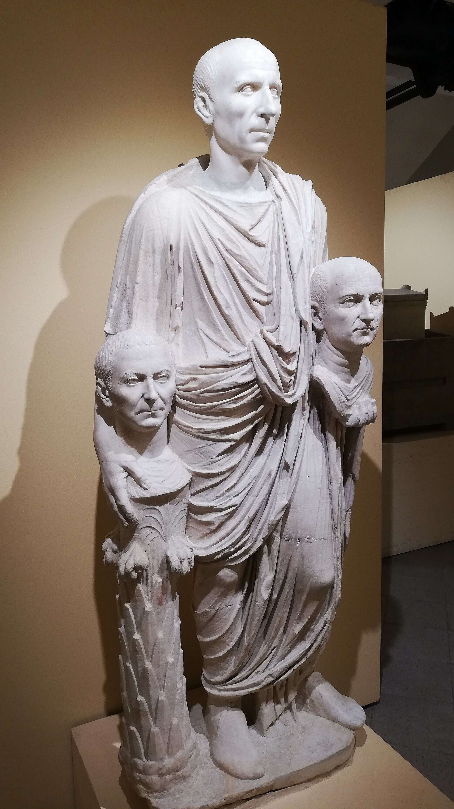
Source
Carlo Dell'Orto, Togato Barberini, Wikimedia Commons. Licence : Creative Commons BY-SA 4.0.L'hérédité et le paterfamilias
« La vie du jeune Romain débute dans [la] domus, dirigée par le père de famille dont il demeurera juridiquement dépendant — même à l'âge adulte — jusqu'à ce que ce dernier ne décède et qu'il devienne, à son tour, le paterfamilias de sa domesticité.
Dans une société où le taux de mortalité infantile était sans doute très élevé (il devait avoisiner les 45 %), l'on peut estimer qu'à peine le tiers des jeunes dépassaient le cap de la trentaine. Dans ce contexte, assurer la descendance et le maintien des cultes familiaux était primordial.
Chez les Romains, la filiation peut être naturelle ou juridique, dans lequel cas elle sera assurée par l'adoption de garçons issus d'autres familles alliées ou de branches cousines. L'adoption revêtait dans ce contexte un caractère aussi fort que la filiation biologique. Une famille disposant de plusieurs fils pouvait ainsi, de sa propre initiative, en donner quelques-uns en adoption afin de cimenter ses alliances politiques. » (Source : Pierre-Luc Brisson, Histoire de la Rome antique, Québec, 2020, pages 55-56)
Tria nomina
« Le Romain avait trois noms (tria nomina) : le praenomen, qui était le prénom du citoyen; le nomen, qui était le nom de la gens, du clan familial; et le cognomen, qui était d'abord un surnom personnel [...]. Ainsi, le nom complet de Jules César était Caius Iulius Caesar, Jules étant en réalité le nom de son clan familial [...] et non son prénom comme pourrait le laisser croire sa forme francisée. » (Source : Pierre-Luc Brisson, Histoire de la Rome antique, Québec, 2020, pages 56-57)
Liste des 18 prénoms masculins des Romains
- Aulus
- Appius
- Caius
- Cnaeus
- Kaeso
- Decimus
- Lucius
- Mamercus
- Marcus
- Manius
- Numerius
- Publius
- Quintus
- Sextus
- Servius
- Spurius
- Titus
- Tiberius
L'habitation : un exemple de lieu privé
« Selon son rang et son niveau de richesse, le Romain vivait dans une grande domus (la maison d'une famille nantie, d'une superficie moyenne de 600 m2) ou dans les insulae, des immeubles de logements qui s'élevaient parfois sur plusieurs étages et qui comptaient environ une quarantaine de locataires. Dans ces conditions, et considérant la forte concentration urbaine de la ville de Rome, les incendies étaient fréquents et pouvaient causer, comme en 64 et 80 apr., d'importantes destructions.
Les empereurs Auguste et Trajan imposèrent chacun des limitations à la hauteur des bâtiments construits dans la capitale (respectivement à 70 et à 60 pieds romains, soient 20,60 m et 17,66 m) afin de prévenir les risques d'effondrement des structures.
La domus romaine servait de cadre privilégié à la vie familiale, la demeure étant [...] une espèce de temple privé abritant les lares de la famille, les divinités du foyer auxquelles on vouait un culte et dont le paterfamilias était en quelque sorte le prêtre particulier. C'est autour de l'autel de la maison, le laraire (lararium), que la famille se réunissait pour chacun des grands moments qui scandaient la vie de ses membres : naissance, prise de la toge virile pour les garçons, mariage, funérailles. » (Source : Pierre-Luc Brisson, Histoire de la Rome antique, Québec, 2020, pages 50 et 55)
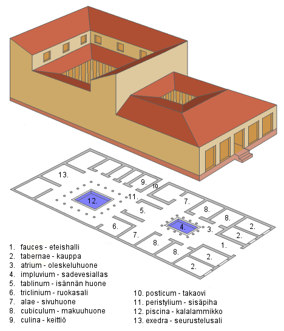
Source
User Ohto Kokko on fi.wikipedia, Domus suomi, Wikimedia Commons. Licence : Creative Commons BY-SA 3.0.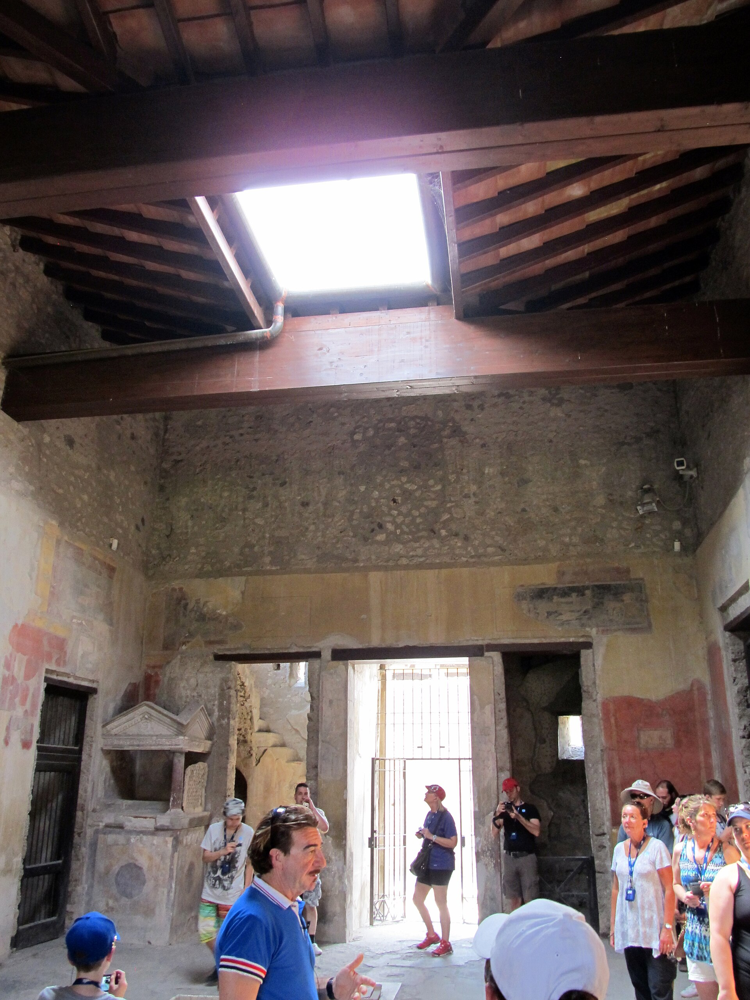
Source
daryl_mitchell from Saskatoon, Saskatchewan, Canada, House of Menander Atrium (15910376965), Wikimedia Commons. Licence : Creative Commons BY-SA 2.0.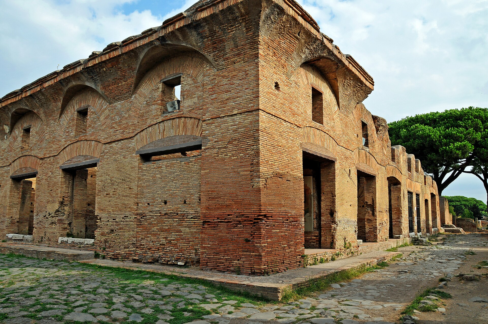
Source
Dennis G. Jarvis, Insula in Ostia, Wikimedia Commons. Licence : Creative Commons BY-SA 2.0.Les métiers
Voici quelques métiers romains qui pourraient te surprendre.
Le parfumeur
Le nom latin du parfumeur est seplasiarius. La parfumerie est la seplasia.
Le parfumeur romain crée des parfums et les vend. Il commercialise ses parfums dans des flacons.
La parfumerie est une boutique parfois installée sur le forum et généralement située au coeur de la cité, dans un lieu passant.
Les parfums, utilisés plusieurs fois par jour, sont en général conservés dans des flacons d'albâtre ou de verre ou des vases en onyx. On les verse ou on les frotte sur la peau de l'utilisateur et différentes senteurs sont utilisées selon les occasions et selon le sexe. On fait aussi usage de déodorants à base d'alun, d'iris et de pétales de rose. Du fait de leur odeur, on attribue aux parfums des vertus contre différentes maladies, comme la fièvre et l'indigestion. Il est d'ailleurs intéressant de noter que la profession de parfumeur était souvent rapprochée de celle de médecin.
Le marchand d'huile
Le marchand d'huile est l'oliarius.
Les marchands et négociants en huile étaient le plus souvent des affranchis. Ces affranchis étaient des commerçants indépendants ou bien représentaient les intérêts de propriétaires ou d'hommes d'affaires.
Son huile est contenue dans des jarres. Dans sa boutique, il verse de l'huile dans une jatte ou une coupe bien creuse et large. L'huile est ainsi présentée à la clientèle. Lorsqu'un client vient en acheter, l'oliarius puise l'huile avec une louche spécifique : la cupa olearia. Il verse ensuite l'huile de la cupa olearia dans un récipient. Le commerçant utilise un cornet pour transvaser l'huile de la cupa au récipient du client.
La stèle de l'oliarius de Cherchel montre la gestuelle du marchand d'huile : il utilise une cupa olearia et transfère de l'huile dans un récipient.
L'huile est transportée et conservée dans des amphores spécifiques.
Les foulonniers
Les foulonniers sont les fullones. Ils travaillent dans des fullonica.
Les foulonniers ont la charge de trois types de tâches :
- les finitions de tissus bruts : ils doivent apprêter les tissus;
- le nettoyage des vêtements;
- raviver les couleurs ou rendre au blanc son éclat.
Les ateliers de foulons étaient nombreux à l'époque romaine. Les cités romaines d'Italie voient l'aménagement de fullonica destinés à fournir leurs services aux membres de la haute société. Rome est dotée de nombreux ateliers de foulons. Les provinces romaines voient également se développer en nombre les fullonica. Des ateliers de foulons s'installent en Afrique romaine.
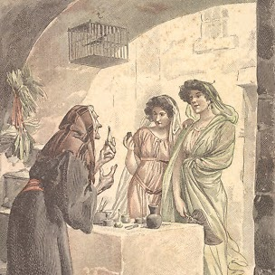
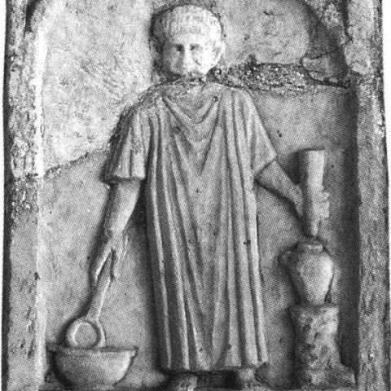
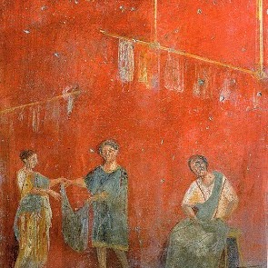
Les divertissements
Les Romains disposent de nombreux jours de fêtes. Ces jours-là, la majorité de la population se rend au cirque ou au théâtre. Toutes les villes romaines possèdent leur propre équipement de loisir et c'est également le cas pour de nombreux villages. Certains de ces monuments sont de véritables marqueurs de la civilisation romaine.
Les thermes font aussi partie de ces lieux où les Romains aiment passer leurs journées de repos.
Les thermes
Les thermes sont au nombre des monuments caractéristiques de la civilisation romaine. Les thermes sont les bâtiments réservés aux bains. Il y a les thermes publics et les thermes privés. Les établissements thermaux sont particulièrement prisés par les Romains.
Sous l'Empire, les thermes publics sont construits en grand nombre à Rome, mais aussi dans toutes les provinces romaines. Chaque cité est dotée de son établissement thermal. Les grandes cités romaines comme le petit vicus en sont pourvus. Certains établissements sont spectaculaires comme les thermes de Caracalla.
Les thermes publics ont deux fonctions tout aussi importantes l'une que l'autre : l'une sur le plan de l'hygiène et l'autre sur le plan social. Les thermes publics romains sont un lieu de rencontre et de détente.
Ils sont fréquentés par tous les Romains. Les établissements ne sont pas fréquentés aux mêmes moments par les hommes et les femmes. Certains établissements semblent plutôt fréquentés par une catégorie sociale : des gens aisés ou alors des gens du peuple.
Les Romains aisés peuvent se rendre quotidiennement aux thermes. Ils y passent parfois l'après-midi.
Les Romains se lavent, se baignent, mais se font aussi masser, en profitent pour discuter et peuvent faire du sport et même, dans certains établissements, consulter les ouvrages de la bibliothèque.
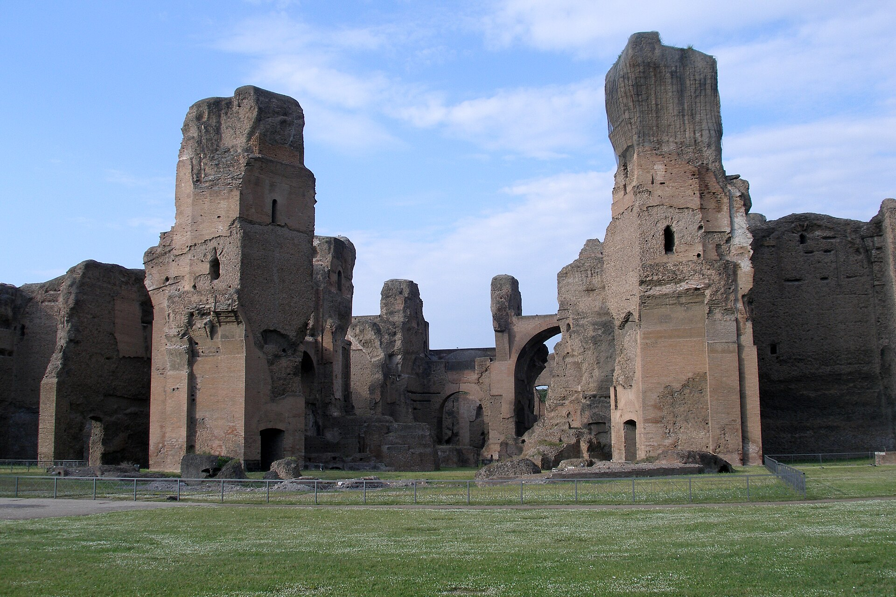
Source
Vyacheslav Argenberg, Rome, Italy, The Baths of Caracalla, Wikimedia Commons. Licence : Creative Commons BY 4.0.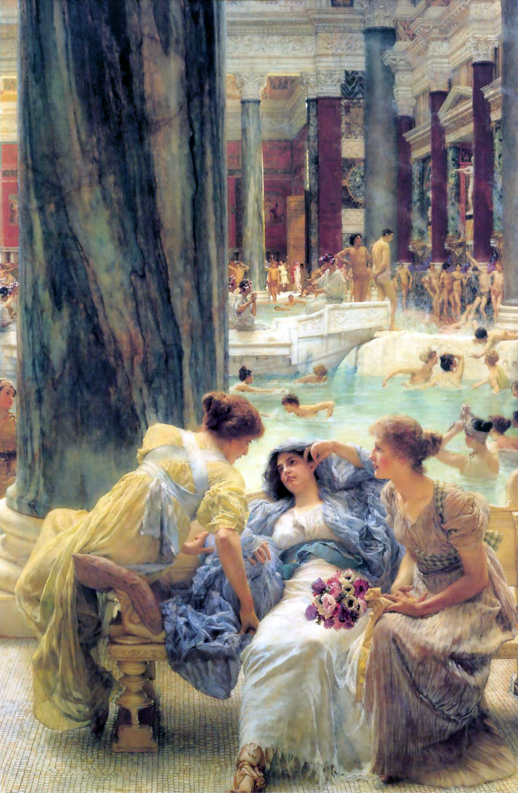
Source
Lawrence Alma-Tadema, The Baths at Caracalla, Wikimedia Commons. Licence : Domaine public.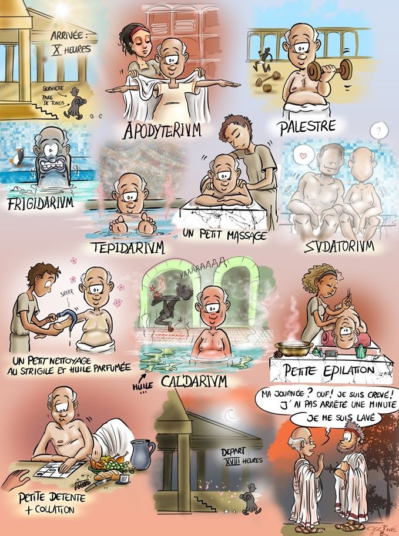
Le théâtre d'Aspendos
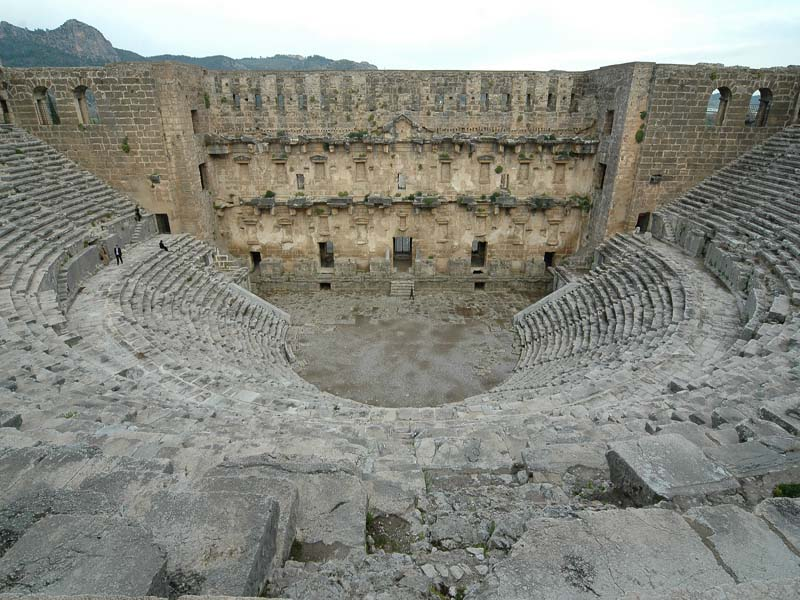
Source
negroni f, Theatre Aspendos, Wikimedia Commons. Licence : CC BY 2.5.Certains théâtres provisoires étaient en bois. Ils étaient construits à l'occasion de fêtes publiques. Le premier théâtre de pierre date de -55.
Le théâtre romain est construit sur un plan semi-circulaire. Il est doté d'une scène (la scaena), d'une avant-scène et d'un mur de scène (frons scaenae).
Les acteurs jouent sur la scène et parfois sur l'avant-scène. Mais la plupart du temps, l'avant-scène est réservée aux spectateurs importants qui disposent de sièges confortables.
Le cirque romain
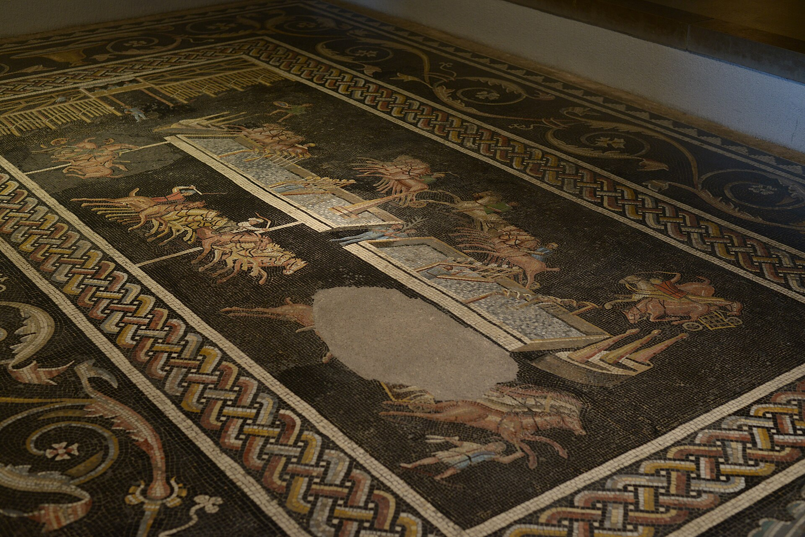
Source
Ruthven, Mosaïque des Jeux du cirque - Musée gallo-romain de Fourvière - ensemble, Wikimedia Commons. Licence : Creative Commons Zero.Les jeux du cirque sont des manifestations cultuelles. Ce sont des courses de chars et des combats de gladiateurs donnés dans le cirque. Très appréciés sous la République, les jeux du cirque prendront une importance considérable sous l'Empire. Les empereurs encadrent d'ailleurs de près l'organisation de ces jeux, qui contribuent à leur prestige.
Les chars rivalisent de vitesse. Le conducteur dirige le char et s'efforce de le maintenir en équilibre dans les virages. Ces courses sont très violentes et parfois meurtrières. En effet, emportés par la vitesse, certains chars se renversent ou s'accrochent. La foule surexcitée encourage les conducteurs. Les meilleurs conducteurs sont considérés comme des héros et peuvent devenir riches.
L'amphithéâtre
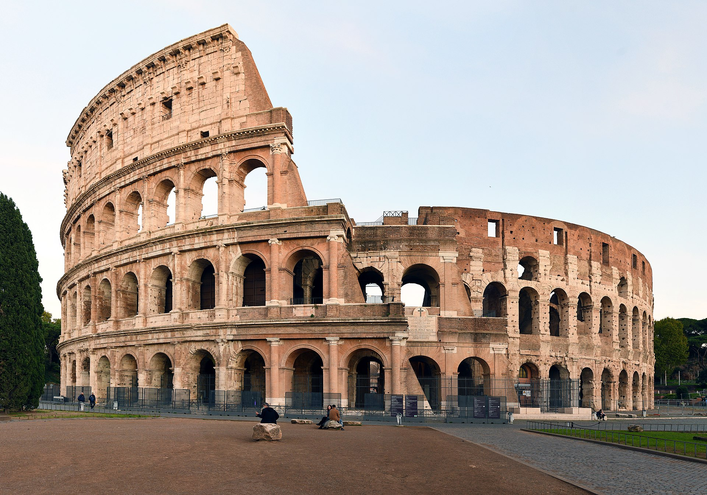
Source
FeaturedPics, Colosseo 2020, Wikimedia Commons. Licence : Creative Commons BY-SA 4.0.L'amphithéâtre a une forme elliptique et comporte une arène en son centre. On y trouve plus de 20 000 places.
Les entrées et sorties sont disposées tout autour du bâtiment et communiquent par le biais de galeries circulaires. Elles permettent aux nombreux spectateurs de circuler sans se bousculer. En cas de pluie, le public peut s'abriter dans les galeries.
Dans certains amphithéâtres, les spectateurs pouvaient être protégés du soleil par une bâche tendue au-dessus des gradins : le velum.
Le premier amphithéâtre date du 1er siècle av. J.-C.
Les gladiateurs
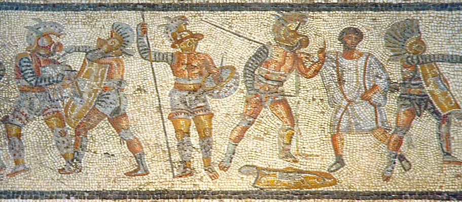
Source
Unknown author Unknown author, Gladiators from the Zliten mosaic 3, Wikimedia Commons. Licence : Domaine public.Les gladiateurs sont des professionnels, des condamnés à mort, des esclaves ou des prisonniers. Leur armement est varié : glaive, trident, lance ou filet.
Lorsque deux gladiateurs se battent, ils ne sont généralement pas dotés du même armement. Il arrive cependant que deux gladiateurs appartenant à la même catégorie et donc similairement équipés soient opposés. Les gladiateurs sont entraînés dans des écoles spécialisées. Ils sont formés par un instructeur : le laniste (lanista).
Les combats se déroulent en fin de journée. Les gladiateurs vainqueurs reçoivent de l'argent ou des récompenses honorifiques.
Les combats de gladiateurs sont très prisés par les Romains. Ceux-ci exportent ces combats sur tout le territoire romain. Certains magistrats romains organisent des combats de gladiateurs en Afrique.
La justice : le droit romain
Vers 131, l'empereur Hadrien exige la création d'un recueil de lois, regroupant les décisions judiciaires émises par les magistrats romains. Ce code, connu sous le nom d'Édit perpétuel, est devenu le point de référence obligatoire pour tous les magistrats et gouverneurs dans l'exercice de la justice. Ce faisant, il a permis d'appliquer un ensemble de lois cohérent et uniforme dans l'ensemble de l'Empire.
[Cependant], de nombreuses lois contenues dans les anciens ouvrages étaient répétitives, contradictoires ou ne répondaient tout simplement pas aux exigences d'une société qui avait évolué depuis l'époque romaine. [Avec ses] 2 000 livres et 3 millions de lignes de texte juridique, [le système de justice romain était devenu inefficace, incohérent et très mal interprété].
À partir de ce moment, les lois sont appliquées de la même manière, partout dans l'Empire. Seul l'empereur a le pouvoir de les modifier.
(Source du texte : Mathieu Mercier et Mark Cartwright, Corpus Juris Civilis, World History Encyclopedia, consulté le 4 janvier 2024)
Le code Justinien de 529
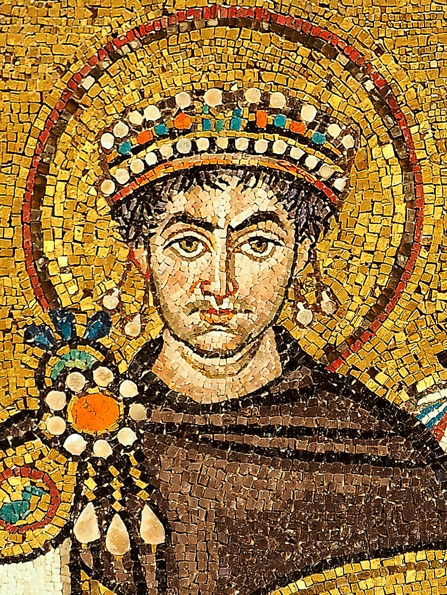
Source
Petar Milošević, Mosaic of Justinianus I - Basilica San Vitale (Ravenna), Wikimedia Commons. Licence : Creative Commons BY-SA 4.0.Le code de Justinien ou Corpus Juris Civilis est une réforme majeure du droit créée par l'empereur Justinien Ier en 528-529. Visant à clarifier et à mettre à jour les anciennes lois romaines, à éliminer les incohérences et à accélérer les processus juridiques, cette collection d'édits impériaux et d'avis d'experts couvrait toutes sortes de sujets : des crimes spécifiques, le mariage, l'héritage des biens, etc.
Non seulement il servit de base au droit byzantin pendant plus de 900 ans, mais les lois qu'il contient continuent d'influencer de nombreux systèmes juridiques occidentaux à ce jour.
(Source du texte : Mark Cartwright, Corpus Juris Civilis, World History Encyclopedia, consulté le 4 janvier 2024)
On y retrouve des articles concernant les éléments suivants :
- Présomption d'innocence : renforcement du principe d'innocence jusqu'à preuve de culpabilité, essentiel pour protéger contre les jugements injustes et les accusations infondées.
- Fardeau de la preuve : obligation pour le plaignant de fournir des preuves pour étayer ses allégations, évitant ainsi les accusations non fondées.
- Jugements basés sur des preuves : insistance sur des jugements fondés sur des preuves concrètes et vérifiables pour assurer l'équité et l'objectivité judiciaires.
La romanisation des régions conquises
L'exemple des villes de Lutèce et de Toulouse, en Gaule
Comme tu l'as vu en mise en contexte, la romanisation désigne l'adoption de la langue latine et de la culture romaine par les peuples conquis.
L'Empire romain faisait de la romanisation des régions conquises une priorité absolue. Ainsi, des villes telles que Lutèce (Paris aujourd'hui) et Toulouse ont été romanisées par la construction d'un aqueduc, d'un amphithéâtre, d'un gymnase, des thermes, etc.
Deux vidéos partagées sur Facebook permettent de voir des reconstitutions de ces villes gallo-romaines :
Les infrastructures romaines
Partout où Rome s'installe, elle bâtit. Quatre constructions suffisent à reconnaître le passage des Romains : la voie, l'arc de triomphe, le mur fortifié et l'aqueduc.
La voie romaine
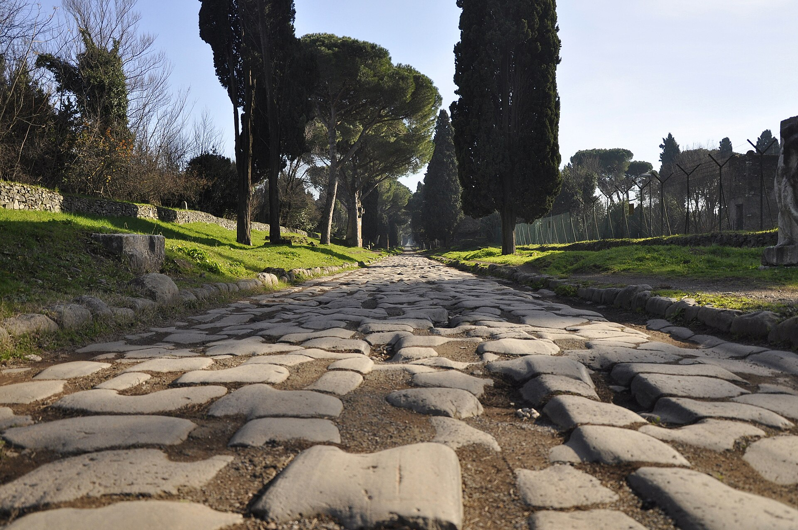
Source
Paul Hermans, Rome Via Appia Antica 13-01-2011 13-21-18, Wikimedia Commons. Licence : Creative Commons BY-SA 3.0.« Tous les chemins mènent à Rome » est une expression populaire qui signifie qu'il existe plusieurs manières d'atteindre son but. Cette expression est inspirée des fameuses voies romaines qui étaient construites en étoile autour de Rome, pour que toutes les marchandises et autres richesses puissent arriver dans la ville. Ces voies étaient assez larges pour permettre à deux chars de se croiser, et on avait également construit des trottoirs sur lesquels les piétons pouvaient circuler sans danger. Tous les douze kilomètres environ, on trouvait de quoi manger et dormir. En quelque sorte, on peut dire que tout convergeait vers Rome.
Ces routes ont permis l'amélioration du commerce, la transmission facile des ordres de l'empereur, le déplacement rapide des légionnaires, le retour des impôts, etc. Ces routes ont permis l'amélioration constante du commerce. Les provinces ont pu ainsi exporter une bonne partie de leur production pour la vendre à Rome où habitaient bon nombre de gens fortunés.
Les techniques de construction des voies romaines sont simples, mais leur efficacité est éprouvée. Les Romains commencent par creuser une large tranchée dans laquelle ils superposent plusieurs couches de matériaux :
- une première couche de fond de gros cailloux;
- une couche intermédiaire constituée de cailloux de taille moyenne;
- une troisième couche composée de petits cailloux, de gravier ou de sable.
L'arc de triomphe
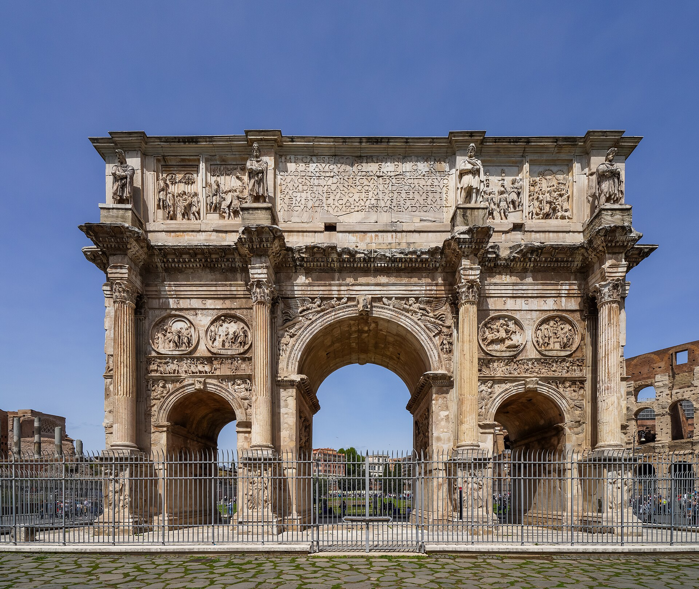
Source
NikonZ7II (Paris Orlando), Arch of Constantine (Rome) - South side, from Via triumphalis, Wikimedia Commons. Licence : Creative Commons BY-SA 4.0.Les arcs de triomphe sont des monuments construits en l'honneur des généraux romains qui reviennent à Rome en tant que vainqueurs. Avec le temps, des arcs ont été construits à plusieurs endroits dans l'Empire pour commémorer des événements importants.
À l'origine, lorsqu'un général revenait d'une campagne militaire victorieuse, il devait traverser une structure temporaire en bois construite pour l'occasion. Cette structure s'appelait un arc de triomphe et avait deux objectifs :
- le côté symbolique : souligner la victoire du général et de son armée;
- le côté spirituel : le passage dans cette porte magique devait décharger les soldats de l'énergie destructrice qui leur avait permis de vaincre leurs ennemis.
(Source : Alloprof)
Le mur d'Hadrien
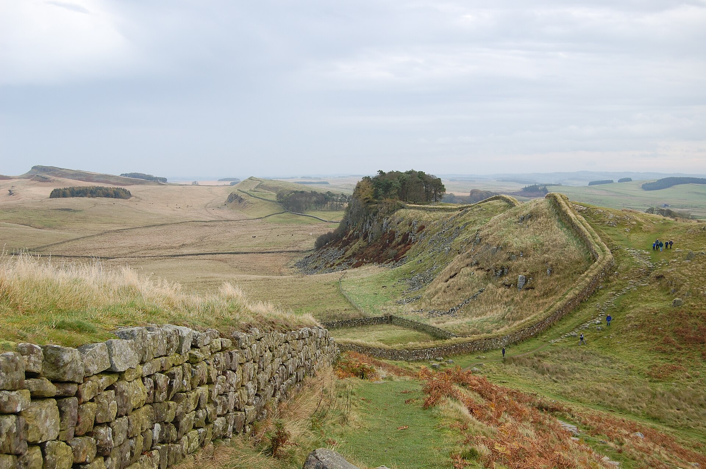
Source
Steven Fruitsmaak, Hadrian's Wall west of Housesteads 3, Wikimedia Commons. Licence : Domaine public.Le mur d'Hadrien est une fortification romaine construite au 2e siècle. Il s'étend sur 117 kilomètres et divise l'Angleterre en deux. Sa construction fut ordonnée par l'empereur Hadrien. Ce dernier avait pour but d'établir la défense de la Bretagne et le contrôle des frontières.
Il s'agissait de protéger la province romaine de Bretagne des incursions des Pictes, une population vivant au nord de la frontière. Le mur permettait également de gérer les déplacements de part et d'autre de la frontière et d'affirmer la présence romaine dans la région.
La structure du mur comprenait des forts, espacés d'environ 1,5 km, des tours de guet et un fossé appelé le Vallum, situé au sud.
L'aqueduc romain
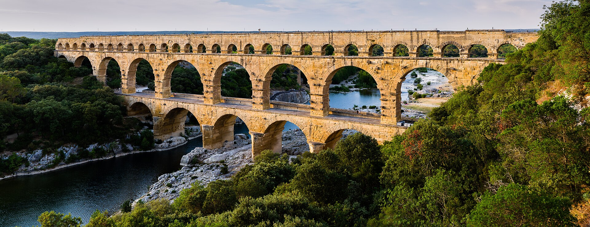
Source
Benh LIEU SONG ( Flickr ), Pont du Gard BLS, Wikimedia Commons. Licence : Creative Commons BY-SA 3.0.Un aqueduc est un monument typique de la Rome antique, système de transport d'eau par le moyen de la gravité, c'est-à-dire en utilisant la pente du terrain, comme une rivière naturelle. L'aqueduc du pont du Gard a un dénivelé d'environ 25 cm par kilomètre, ce qui démontre l'immense savoir-faire des ingénieurs romains.
Un aqueduc permet d'obtenir de l'eau courante et assez abondante sans pompe, tandis que l'eau d'un puits doit être puisée pour être utilisée.
La chute de l'Empire romain d'Occident en 476
Une perte d'identité et l'attente du paradis
Les citoyens romains ont peu à peu perdu leurs vertus civiques. Ils auraient, finalement, oublié de défendre l'empire face aux intrusions barbares.
L'historien britannique Edward Gibbon considère également l'essor du christianisme comme étant une des causes de la chute. La religion aurait détourné le peuple de la vie quotidienne de l'empire au profit de l'attente des récompenses du paradis.
La romanisation des peuples germaniques
À partir du 3e siècle, Rome commence à être menacée par les peuples germaniques. D'ailleurs, certains de ces peuples se mettent à vivre au sein même de l'empire et s'allient aux Romains.
À cette époque, on trouve même des mercenaires payés pour défendre Rome. Cela nuit grandement à la sécurité de l'Empire : il suffit qu'un peuple germain soudoie ces mercenaires pour qu'ils le laissent pénétrer au sein de l'empire.
Les Empires romains d'Occident et d'Orient
En 395, à la mort de l'empereur Théodose, l'Empire, qui est devenu trop vaste pour être gouverné, fut partagé en deux : l'Orient revint à Flavius Arcadius (395-408), l'Occident à Flavius Honorius (384-423).
Théodose organisa le partage de l'Empire selon une stricte ligne droite : elle passait, au nord, au milieu des actuels Serbie et Monténégro et, au sud, au milieu de la Libye. À cette époque, cette division ne devait être qu'administrative.
L'empire d'Occident gardait Rome comme capitale; l'empire d'Orient avait Constantinople, du nom de l'ancien empereur Constantin (272-337). Mais l'unité de l'Empire était définitivement brisée, alors qu'il se trouvait divisé entre l'Empire romain d'Occident et l'Empire romain d'Orient.
Les invasions germaniques
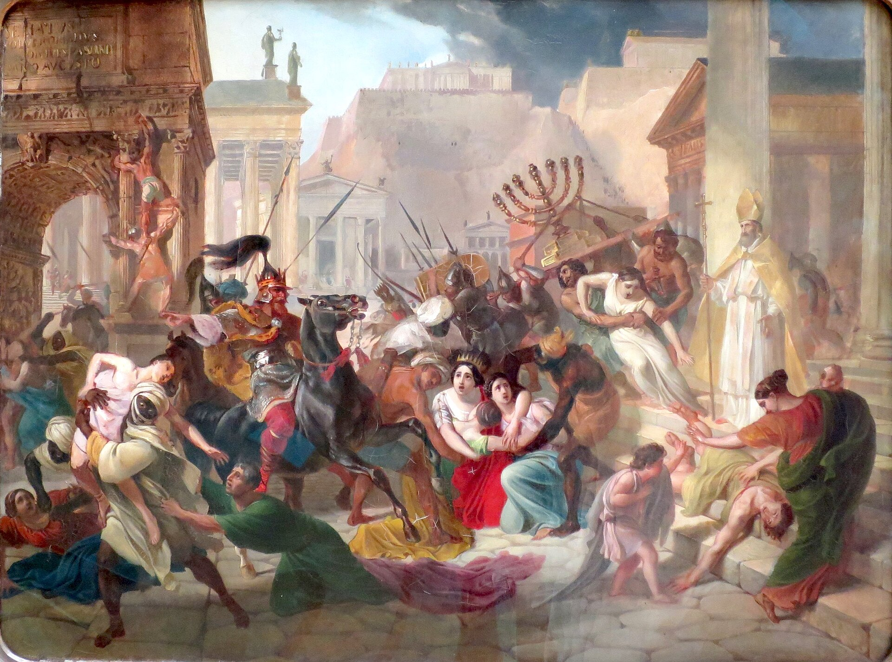
Source
Karl Bryullov, Genseric sacking rome 456, Wikimedia Commons. Licence : Domaine public.Les invasions germaniques ont joué un rôle déterminant dans la chute de l'Empire romain d'Occident. Dès le 3e siècle, des peuples germaniques comme les Goths, les Vandales et les Francs ont commencé à franchir les frontières romaines, cherchant des terres et des ressources.
Au 4e siècle, la pression des Huns a poussé de nombreuses tribus germaniques à s'installer à l'intérieur de l'Empire. Les Wisigoths, par exemple, ont pillé Rome en 410. Au 5e siècle, les Vandales ont établi un royaume en Afrique du Nord, tandis que les Francs se sont installés en Gaule.
Ces invasions ont affaibli l'Empire romain, déjà en proie à des problèmes internes tels que l'instabilité politique et économique. En 476, le dernier empereur romain d'Occident, Romulus Augustule, a été déposé par le chef germanique Odoacre, marquant la fin de l'Empire romain d'Occident.
Pour aller plus loin
Mets-toi dans la peau d'un gouverneur de province romaine avec Legatus, un jeu sérieux où tu administres un territoire conquis : impôts, routes, légions et romanisation, toutes les décisions passent par toi.
Sources
- Service national du RÉCIT en univers social
- Pierre-Luc Brisson, Histoire de la Rome antique, Québec, 2020
- Alloprof, La romanisation
- World History Encyclopedia, Corpus Juris Civilis
- Wikipédia, République romaine